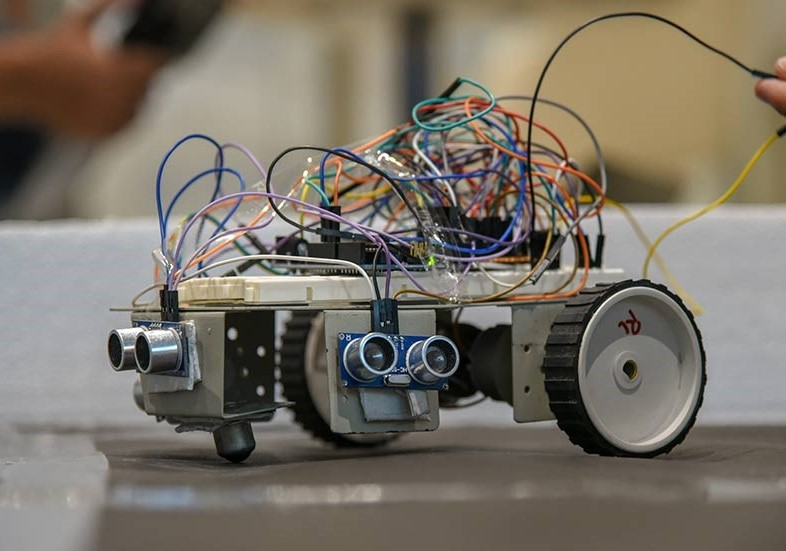

Our Vision

To be the favoured destination for quality education in electronics and communication engineering.
1983
Establishment Year
60
seats per year
Research and Publications
Contributor: Dr. Navajit Saikia
- Prabin K. Bora and Navajit Saikia “Image Retrieval Using One-Sided Linear Prediction Based Texture Modelling”, ICVGIP 2002, Proceedings of the Third Indian Conference on Computer Vision, Graphics & Image Processing, Ahmadabad, India, December 16- 18, 2002
- Navajit Saikia, Prabin K. Bora “Retrieving Video in Wavelet Compressed Domain”, 8th International Conference on Information Technology, Bhubaneswar, Dec 20-23, 2005.
- Navajit Saikia, Prabin K. Bora “Video Authentication Using Temporal Wavelet Transform” -15th International Conference on Advanced Computing and Communications (ADCOM 2007).
- Navajit Saikia, Prabin K. Bora “A hybrid algorithm for video authentication” National Conference on Communications (NCC)2008 Jan. 2008.
- Navajit Saikia, Prabin K. Bora “Robust video hashing using the 3D-DWT” National Conference on Communications (NCC)2011 on - 28-30 Jan. 2011, IEEE
- Navajit Saikia “Perceptual hashing in the 3D-DWT domain”- International Conference on Green Computing and Internet of Things (ICGCIoT), 2015 - 8-10 Oct. 2015 IEEE.
- Navajit Saikia, Prabin K. Bora “Perceptual hash function for scalable video” - February 2014, International Journal of Information Security 13(1), Springer DOI 10.1007/s10207- 013-0211-z
- Gautam Chakraborty, Mridusmita Sharma, Navajit Saikia and Kandarpa Kumar Sarma, "Recurrent Neural Network Based Approach To Recognise Isolated Digits In Sylheti Language Using MFCC Features", Proceedings of International Conference On Telecommunication, Power Analysis And Computing Techniques(ICTPACT) – 2017, ISBN: 978-1-5090-3381-2, 6th – 8th April 2017.
- Gautam Chakraborty and Navajit Saikia, "A Survey on Automatic Speech Recognition with special reference to Sylheti Language", Proceedings of 5th International Conference on Computing for Sustainable Global Development, 14-16 March,2018.
- Gunajit Kalita, Navajit Saikia, "Reversible Comparator circuit using a new Reversible Gate", Proc. Of 6 th International Conference on Computer Communication Technology 25th - 27th Sep, 2015, Published by ACM
- Gunajit Kalita, Navajit Saikia, "Designing reversible arithmetic, logic circuit to implement micro-operation in quantum computation", XXVII IUPAP Conference on Computational Physics , IIT Guwahati,(CCP2015)Published IOP in Journal of Physics: Conference Series759(2016) 012097
- A. J. Das and N.Saikia, “Pedestrian Detection using Dense LDB descriptor combined with HOG”, in IEEE International Conference on Information Technology (InCITe 2016), Amity University, 6th-7th Oct. 2016, Noida, India.
- A. J. Das, N. Saikia, K. K. Sarma, “Object classification and tracking in real-time: An overview” in Emerging Technologies in Intelligent Applications for Image and Video Proc (V. Santhi, D. P. Acharjya and M. Ezhilarasan (eds.), Chapter-11, pp. 250-295.
Contributor: Dr. Rashi Borgohain
- R. Borgohain, S. Sharma, and J. C. Dutta "Modelling Cylindrical nano size ISFET for Biosensor applications" Proc. of CODEC-06, Kolkata University, India,Dec. 2006
- J. C. Dutta, S. Sharma, and R. Borgohain " Mixed Domain Modelling and Simulation of nano size ISFET for Bio-electronic device" Proc.of ICRTNT-06, Jadavpur University, India, 7th -9 th Dec. 2006.
- A. B. Kalita, S. Sharma, and R. Borgohain "Conical MOSFET: A Novel Device Geometry f for Surrounding Gate MOSFET" International Conference on Recent Trends.
- Ranjita Das, Rashi Borgohain, et al. "Study on sheet resistance variation in ZnO nanorod arrays upon exposure to LPG at room temperature." Energy, Power and Environment: Towards Sustainable Growth (ICEPE), 2015 International Conference on. IEEE, 2015.
- Rashi Borgohain, Prabin Kumar Boruah, and Sunandan Baruah. "Heavy-metal ion sensor using chitosan capped ZnS quantum dots." Sensors and Actuators B: Chemical 226 (2016): 534-539.
- Rashi Borgohain and Sunandan Baruah. "Design and analysis of UV detector using ZnO nanorods on interdigitated electrodes." ADBU Journal of Engineering Technology 4 (2016).
- Rashi Borgohain, et al. "Detection of Zn 2+ ion with UV light activated ZnO nanorods." ADBU Journal of Engineering Technology 5.1 (2016).
- Rashi Borgohain, et al. , “NO 2 sensing at room temperature using ZnO nanorods on graphene”, International Conference on Advances in Nanotechnology (ICAN), 2017.
- Rashi Borgohain and Sunandan Baruah. "Development and Testing of ZnO Nanorods Based Biosensor on Model Gram-Positive and Gram-Negative Bacteria." IEEE Sensors Journal 17.9 (2017): 2649-2653